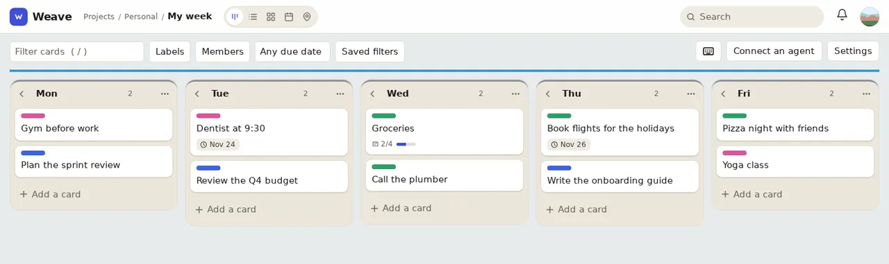
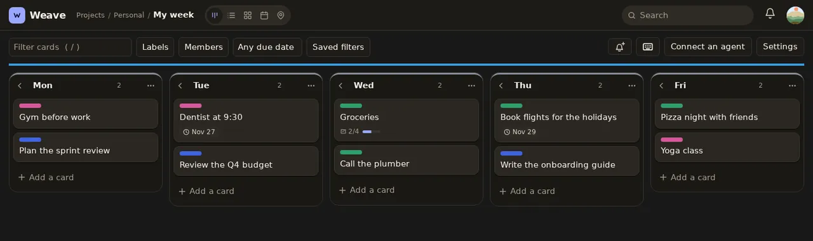

Plan your week
Put each day in a column and drop in what has to happen: the dentist on Tuesday, groceries on Wednesday, a long run at the weekend, and a someday column for the things that can wait. Labels tell work, home and health apart at a glance, checklists hold the shopping list, and a due date puts the card on the calendar.
- Press Enter to add a card and keep typing; paste a list to add many at once.
- Recurring cards bring back the weekly jobs by themselves.
- Share the board with the household; live updates never overwrite what someone is typing.
Start from Weekly planner: Mon to Fri, Weekend and Someday columns, with Work, Home and Health labels. Also try Home & chores and Meal planning.

